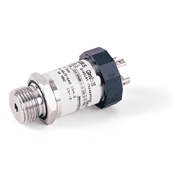
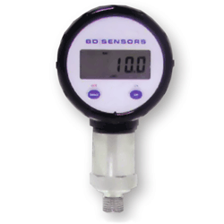
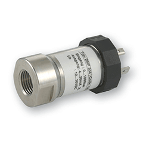

Измерение давлений от 0,1 мбар до 2200 бар: Общепромышленные датчики абсолютного, избыточного и дифференциального давления Общепромышленные погружные и врезные датчики уровня жидкостей Интеллектуальные высокоточные датчики давления и уровня Многофункциональные датчики-реле давления с индикацией Электронные программируемые реле давления Специальные датчики для измерения давления и уровня агрессивных, вязких и высокотемпературных сред Дополнительные устройства для датчиков (демпферы гидроударов, индикаторы, вентильные блоки и др.)
Стандартные экономичные решения и специальные датчики в индивидуальном исполнении. Оптимальное соотношение цена/качество в совокупности с одной из самых широких линеек продукции.

Датчики давления энергосберегающие
для измерения абсолютного и избыточного давления DMP 331 - низкое энергопотребление ( в десятки раз меньше стандартных датчиков с выходным
сигналом 4-20 мА).
- за счет ускоренного выхода на режим после подачи питания датчик успешно
применяется в автономных системах мониторинга и управления со скважным
режимом опроса параметров. Технические характеристики:
- Выходной сигнал: 0,5...4,5 В, 0,8...3,2 В (опция)
- Питание: 6...15 В, 5 В (опция)
- Потребляемый ток: 2 мА
- Основная погрешность: 0,1% ВПИ
- Дополнительная температурная погрешность: +/-0,02% ВПИ/10 грд.С.
- Номинальные диапазоны: от 16 кПа до 6 МПа.

Новый цифровой манометр DM 10 - недорогой, устойчивый к вибрациям прибор с поворотным корпусом дисплея и
встроенным автономным источником питания со сроком службы до 5 лет.
- позволяет выбирать единицы измерения.
- опционально доступна функция автоматического отключения. Технические характеристики:
- Номинальные диапазоны давления от 1,6 бар до 250 бар
- Основная погрешность: 0,3% ДИ / год
- Штуцеры: G 1/4 DIN 3852, G 1/4 EN 837, 1/4 NPT.
- ЖК-дисплей - 4,5-позиционный 7-сегментный.

Датчики экстремального давления DMP 304 - рассчитаны на большой диапазон давлений от 0...1000 бар до 0...6000 бар и
температур измеряемой среды от -40 до 100 грд.С.
- характеризуется долговременной стабильностью калибровочных характеристик
и продолжительным сроком службы.
- имеют защиту от неправильного подключения, короткого замыкания и перепадов давления. Параметры:
- Выходной сигнал: 4...20 мА
- Подключение: 2-х проводное
- Основная погрешность: до 0,25% ДИ
- Доступны исполнения в полевом корпусе и с искробезопасной электрической цепью.
|